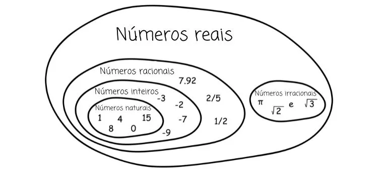
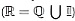
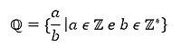
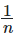
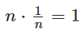

Números reais, conjunto presente na maioria das situações do cotidiano, são formados pela união dos números racionais e dos números irracionais.

O conjunto dos números reais é a união entre o conjunto dos números racionais e o conjunto
dos números irracionais, sendo assim, o número real pode ser um número racional ou um
número
irracional. Por isso, esse conjunto também contempla o dos números naturais e o dos
números
inteiros.
O conjunto dos números reais é o mais utilizado no cotidiano, como na realização de
medições, no cálculo de funções matemáticas, no estudo de grandezas da física e da
química,
entre outras situações.
O conjunto dos números reais é a união dos números racionais (que podem ser representados
em fração) com os números irracionais (que não podem ser representados em fração).
Os números racionais são compostos pelos números naturais e números inteiros.
Podemos calcular as quatro operações com os números reais, e, com base nelas, temos as
propriedades específicas dos números reais:
- existência de um elemento neutro na soma e na multiplicação;
- propriedade associativa;
- propriedade comutativa;
- propriedade distributiva;
- existência de um elemento inverso na multiplicação;
- fechamento para a adição e para a multiplicação.
Os números reais podem ser representados de forma ordenada na reta real.
O conjunto dos números reais é a união entre os conjuntos dos números
racionais e dos números irracionais , sendo necessário
destacar que o conjunto dos números racionais contempla o dos números naturais e o dos
números inteiros.
Os números do cotidiano, em sua maioria, são reais, como os que utilizamos para medir peso,
altura, temperatura, para fazer contagens, para as nossas relações monetárias, entre outras
situações. O conjunto dos números reais não foi o primeiro conjunto numérico a surgir, e,
para compreendê-lo, é necessário conhecer os demais conjuntos numéricos.
O primeiro conjunto numérico a surgir foi o dos números naturais, que
atendeu à necessidade do ser humano de contabilizar e de quantificar objetos. Ele é
representado pela letra N, e os números naturais são:
N=0, 1, 2, 3, 4, 5...
Com o passar do tempo, surgiu a necessidade da representação de números negativos, que não
existem nos números naturais, tornando necessária a ampliação do conjunto, dando origem
ao
conjunto dos números inteiros, composto pelos números naturais e os números opostos a
ele.
Ele é representado pela letra Z, e os números inteiros são:
Z=−3,−2,−1, 0, 1, 2, 3...
O conjunto dos números racionais é formado por todos os números que
podem
ser escritos na forma de fração. Nele incluímos os números decimais, as dízimas
periódicas e
os números inteiros.
Diferentemente dos conjuntos supracitados, o conjunto dos racionais não pode ser descrito
por uma lista dos termos, pois, entre dois números racionais, sempre existirá outro número
racional. Por exemplo, entre 0 e 1, temos 0,5; entre 0 e 0,5, temos o 0,25; entre 0 e 0,25,
temos 0,125, e assim sucessivamente. Os números racionais são representados pela letra
Q,
são eles:

Essa representação quer dizer que o conjunto dos números racionais (Q) é
formado pela fração
a / b, tal que a pertence ao conjunto dos números inteiros e b pertence ao
conjunto dos números
inteiros não nulos.
Quando se pensava que o conjunto dos números racionais continha todos os
números conhecidos, surge o conjunto dos números irracionais, formado pelos números que
não
podem ser escritos na forma de fração. Os irracionais são as raízes não exatas e as
dízimas
não periódicas. Existem números irracionais mais conhecidos, como o número π.
Representamos
esse conjunto pela letra ð•€.
Exemplos:
√3
(Raíz não exata)
π = 3,14159 (O π é uma dízima não periódica, logo, é um número irracional.)
7,12344219023... (Dízima não periódica)
As operações com os números reais não possuem nenhuma divergência em relação às operações com os demais conjuntos. Então, com eles, é possível realizar todas as operações, sendo elas: adição, subtração, multiplicação, potenciação e radiciação.
Os números reais possuem algumas propriedades importantes. Veja cada uma delas a seguir.
Considere n um número real.
Existe um elemento neutro na soma que é o 0.
n + 0 = n
Existe um elemento neutro da multiplicação entre números reais que é o 1.n · 1 = n
Considere n e m números reais.
Na adição, a ordem das parcelas não altera a soma:
m + n = n + m
Na multiplicação, a ordem dos fatores não altera o produto: m · n = n · m
Considere a, m, n números reais.
Na adição de três números, não importa quais números serão somados primeiro.
(a + m) + n = a + (m + n)
Na multiplicação de três números, não importa quais números serão multiplicados
primeiro.
(a · m) · n = a · (m · n)
Considere a, m, n números reais.
Na propriedade distributiva, temos que o produto da soma é igual à soma dos
produtos.
a (m + n) = am + an
Considere n um número real diferente de 0.
Para todo número real n, existe um inverso, 
, tal que o produto de n pelo seu inverso
é igual ao elemento neutro da multiplicação:

O conjunto dos números reais é fechado para a adição e para a multiplicação,
isso quer dizer que:
- A soma de dois números reais é um número real.
- A multiplicação entre dois números reais é um número real.
Podemos representar os números reais em uma reta, isso possibilita, por
exemplo, o desenvolvimento da área da geometria analítica e o estudo de gráficos de
funções.
Para essa representação, utilizamos o princípio da boa ordem dos números reais, pois, ao
comparar dois números reais distintos, é possível saber qual deles é o maior e então
ordená-los. A representação dos números na reta é conhecida como reta numérica ou reta real.
O marco zero é conhecido como origem da reta. Para o lado direito, temos os números reais
positivos, e, para o lado esquerdo, os números reais negativos.
Esta lista de exercícios te auxiliará a estudar o conjunto dos números reais
e seus subconjuntos. Verifique seus acertos por meio da resolução das questões.
Publicado por: Raul Rodrigues de Oliveira
Sobre os números reais, podemos afirmar que:
I. Todo número racional é um número real.
II. Nem todo número irracional é um número real.
III. Todo número natural é um número real.
Marque a alternativa correta:
A) Somente a afirmativa I é falsa.
B) Somente a afirmativa II é falsa.
C) Somente a afirmativa III é falsa.
D) Todas as afirmativas são verdadeiras.
O número 3,141414... é:
A) Uma dízima periódica que pertence ao conjunto dos números irracionais.
B) Uma dízima não periódica que pertence ao conjunto dos números irracionais.
C) Uma dízima periódica que pertence ao conjunto dos números racionais
D) Uma dízima não periódica que pertence ao conjunto dos números irracionais.
E) Uma dízima periódica que não pertence ao conjunto dos números reais.
Considerando m e n como elementos do conjunto dos números reais, analise a propriedade a seguir:
I. m + n = n + m
II. m ⋅ n = n ⋅ m
A propriedade demonstrada nas afirmativas I e II é conhecida como:
A) Propriedade distributiva
B) Propriedade associativa
C) Propriedade de Pitágoras
D) Propriedade comutativa
E) Fechamento para a soma e para o produto
Durante a resolução de problemas envolvendo o teorema de Pitágoras, Manoel realizou a seguinte operação:
x² = 1² + 1²
x² = 1 + 1
x² = 2
x = 2 – √2
Podemos classificar o número encontrado como resposta como:
A) um número real, natural e não inteiro.
B) um número real, inteiro e não racional.
C) um número real, racional e não inteiro.
D) um número real e irracional.
E) um número primo.
Sobre o conjunto dos números reais, julgue as afirmativas a seguir:
I. Existe um elemento neutro para a adição de dois números reais.
II. Existe um elemento neutro para a multiplicação de dois números reais.
III. Esse elemento neutro tanto para a adição quanto para a multiplicação é o 0.
Marque a alternativa correta:
A) Somente a afirmativa I é falsa.
B) Somente a afirmativa II é falsa.
C) Somente a afirmativa III é falsa.
D) Todas as afirmativas são verdadeiras.
Alternativa B
I. Verdadeira
O conjunto dos números racionais é um subconjunto dos números reais.
II. Falsa
O conjunto dos números irracionais é um subconjunto dos números reais, logo todo número irracional é um número real.
III. Verdadeira
O conjunto dos números naturais é um subconjunto dos números reais.
Alternativa C
O número 3,1414.... é uma dízima periódica, pois note que o 14 se repete várias vezes e, por isso, é conhecido como período. A dízima periódica é um número racional, pois pode ser representado como uma fração.
Alternativa D
Nas afirmativas I e II é demonstrada a propriedade comutativa — no primeiro caso, para a adição e no segundo caso, para a multiplicação.
Alternativa D
O número √2 não possui raiz quadrada exata. As raízes não exatas são pertencentes ao conjunto dos números irracionais, já que não podem ser representadas como uma fração. Como o conjunto dos números irracionais está contido no conjunto dos números reais, esse número também será um número real. Logo, temos um número real e irracional.
Alternativa C
I. Verdadeira
De fato, existe um elemento neutro para a adição de dois números reais.
II. Verdadeira
De fato, existe um elemento neutro para a multiplicação de dois números reais.
III. Falsa
O elemento neutro da adição é 0, pois a soma de um número com 0 é igual ao próprio número. O elemento neutro da multiplicação é 1, pois todo número multiplicado por 1 é igual a ele mesmo, o que faz com que a afirmativa III seja falsa.